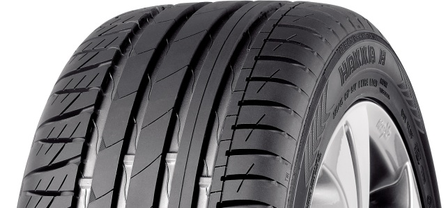

<<<<<<< HEAD
=======
>>>>>>> origin/richard
Autorehvide ajalugu
<<<<<<< HEAD
=======
>>>>>>> origin/richard
☰
<<<<<<< HEAD
Sellel lehel räägime talverehvide ajaloost.
Esimesed rehvid
Esimese täispuhutava kummirehvi lõi 1845. aastal Robert William Thomson, kuid selle tehnoloogia ei leidnud kohe laialdast kasutust.
1888. aastal tõi John Boyd Dunlop turule täiustatud täispuhutava rehvi, mis oli loodud jalgrattale ja sai peagi ka autotootjate seas populaarseks.
20. sajandi alguses algas kiire rehvitööstuse areng, mil sõidukitootjad ja insenerid otsisid viise, kuidas suurendada rehvide vastupidavust ja haarduvust erinevatel teekatetel. Selleks hakati testima erinevaid rehvimustreid ja -kompositsioone.
Suverehvide ajalugu
Esimesed suverehvid kujunesid välja koos esimeste autode tulekuga, mil sõideti peamiselt soojadel ja kuivadel teedel. Need töötati välja 1900. aastate alguses ja need pakkusid paremat haarduvust ning juhitavust kruusateedel.
1920ndateks aastateks hakkas autode kiirus ja jõudlus kasvama, mistõttu tekkis vajadus turvalisemate ja vastupidavamate rehvide järgi. Selle tulemusel hakati suverehvidele looma spetsiifilisemaid mustreid, mis suudaksid pakkuda paremat haaret nii kuivadel kui ka märgadel teedel.
1950. ja 60. aastatel hakati suverehvide tootmisel kasutama sünteetilist kummi ja hakati tootma radiaalrehve, mis muutusid kiiresti standardiks. Need tõid kaasa parema juhitavuse ja vastupidavuse.
Suverehvide areng on keskendunud viimastel aastakümnetel kütusesäästlikkusele, suuremale haarduvusele märjal teekattel ning mürataseme vähendamisele.

Talverehvide ajalugu
1. Esimesed talverehvid (1934)
Esimesed talverehvid loodi Nokian Tyresi poolt 1934. aastal raskeveokitele, et parandada haardumist lumistel teedel.
2. Esimesed talverehvid sõiduautodele (1936)
1936. aastal tulid Nokiani esimeste sõiduautode talverehvid, tuntud kui "Kelirengas", mis pakkusid paremat pidamist libedatel teedel.
3. Naastrehvide levik (1960.-1970. aastad)
1960. aastatel hakati talverehvides kasutama naaste, mis tõid jääl lisahaarduvuse. Samas tõstatus küsimus naastude negatiivse mõju kohta teekattele.
4. Lamellrehvide areng (1980. aastad)
Naastude kahjuliku mõju tõttu hakkasid levima naastudeta talverehvid ehk lamellrehvid, mis sobivad kergemate talvede ja naastude kasutuspiirangutega aladele.
5. Tänapäevased talverehvid
Kaasaegsed talverehvid on kõrgtehnoloogilised, kasutades spetsiaalseid kummisegusid ja mustreid, et pakkuda paremat pidamist ja vastupidavust ka kõige keerulisemates talveoludes.
=======
Sellel lehel räägime talverehvide ajaloost.
Esimesed rehvid
Esimese täispuhutava kummirehvi lõi 1845. aastal Robert William Thomson, kuid selle tehnoloogia ei leidnud kohe laialdast kasutust.
1888. aastal tõi John Boyd Dunlop turule täiustatud täispuhutava rehvi, mis oli loodud jalgrattale ja sai peagi ka autotootjate seas
populaarseks.
Suverehvide ajalugu
Esimesed suverehvid (1900. aastate algus)
Esimesed rehvid olid lihtsad, siledad kummirehvid, mis sobisid hästi kruusa ja kivistel teedel sõitmiseks.
Kiiruste kasvades ja teekatte muutudes tekkis vajadus rehvimustri järele, et parandada rehvide haarduvust.
Esimesed mustriga suverehvid (1920.-1930. aastad)
1920ndateks aastateks oli autode kiirus ja jõudlus nii palju kasvanud, et tekkis nõudlus turvalisemate ja vastupidavamate rehvide järgi.
Seetõttu hakati valmistama mustriga rehve, mis olid loodud peamiselt kuivadel ja tasastel teedel sõitmiseks, kuid need pakkusid ka paremat
haarduvust märgadel teedel
Radiaalrehvid (1940.–1960. aastad)
1940ndate lõpus hakati tootma radiaalrehve, need koosnevad peamiselt kummist, mis on tugevdatud terasvöödega.
Radiaalrehvid muutusid kiiresti standardiks, kuna need parandasid auto juhitavust, vähendasid kütusekulu ja olid vastupidavamad.
Tänapäeva suverehvid
Tänapäeval arendatakse suverehve pidevalt edasi, et saavutada parem pidamine, vastupidavus, sõidumugavus, kütusesäästlikkus ja väiksem
müratase.
Kasutatakse spetsiifilisi kummisegusid ja mustreid, mis tagavad hea pidamise nii kuival kui ka märjal teekattel.
Talverehvide ajalugu
Esialgsed talverehvid (1900)
20. sajandi algul libedates ja lumistes oludes sõites kinnitati suverehvide külge kette. Need parandasid küll haarduvust, aga neil oli
palju miinuseid.
Need kahjustavad teid, kiirendavad rehvide kulumist, piiravad sõidukiirust, halvendavad juhitavust ja nende paigaldamine
on keeruline ja aeganõudev. Seega olid ketid vaid ajutiseks lahenduseks.
Esimesed spetsialiseeritud talverehvid (1934)
Nokian Tyres töötas 1934. aastal välja esimesed veokitele mõeldud talverehvid.
Need rehvid kasutasid täiesti uut tüüpi rehvimustrit, mis pakkus palju paremat haaret libedates oludes.
Esimesed autode talverehvid (1936)
Kaks aastat hiljem tõi Nokian turule esimesed talverehvid sõiduautodele, tuntud kui "Kelirengas."
See oli märkimisväärne hetk, kuna need rehvid pakkusid sõiduautodele talvel paremat haardumist, vajaduseta kette kasutada.
Naastrehvid (1960.–1970. aastad)
1960. aastate lõpus hakati talverehvides kasutama naaste, mis pakkusid libedates oludes paremat haaret.
1970. aastatel muutusid naastrehvid laialt levinuks paljudes lumistes piirkondades.
Samal ajal tõstatati küsimusi naastrehvide mõju kohta teekattele ja tolmu kohta, mida need tekitavad.
Lamellrehvid (1980. aastad)
Kuna naastrehvid kahjustasid teekatet, hakati välja töötama naastudeta talverehve ehk lamellrehve.
Need sobisid hästi piirkondadesse, kus talved olid leebemad ning naastude kasutamine oli kas keelatud või piiratud.
Lamellrehvid põhinesid pehmemal kummisegul ja erilisel mustril, mis pakkusid head pidamist külmadel ja lumistel teedel.
Tänapäeva talverehvid
Tänapäeval arendatakse talverehve pidevalt edasi, et saavutada parem pidamine, vastupidavus, sõidumugavus, kütusesäästlikkus ja väiksem
müratase
Kasutatakse spetsiifilisi kummisegusid, mis pakuvad paremat pidamist madalatel temperatuuridel.
Tänapäeval kasutatakse spetsiaalseid mustreid, mis eemaldavad tõhusalt vee ja lume rehvi alt.